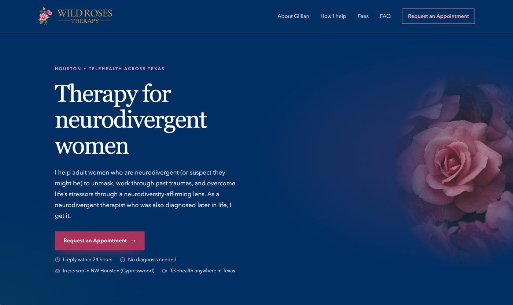
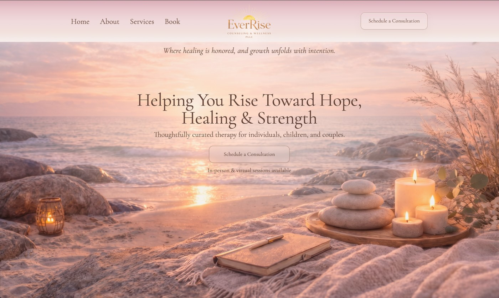

Wild Roses Therapy
Individual therapy · Cypress, Texas
Starting a practice comes with a lot to figure out. I’ll help you create a welcoming website that feels like you—and makes it easy for clients to reach out.
Work directly with me, from first conversation to launch.
A LOOK AT MY WORK
Every practice has its own story. These are two therapy websites I’ve built—take a look around and see what’s possible.

Individual therapy · Cypress, Texas

Counseling and wellness practice
YOU DON'T HAVE TO DO IT ALL
You're building a practice, not trying to become a web designer. I'll help you sort through the decisions and create an online home that reflects your work.
Let’s talk about what you need ↗A thoughtful, mobile-friendly site that introduces your practice, your approach, and the people you help.
Clear next steps so prospective clients know how to connect with you or request an appointment.
Guidance with your domain, getting your site live, and the online basics that make sense for your practice.
SIMPLE FROM THE START
You don’t need a finished plan or all the answers. We’ll figure out the right starting point together.
Share where you are in the process and what you’re hoping your website will do.
We’ll talk through what you need, the scope, and the cost before getting started.
I’ll build your website with your input and help you get it ready to share.
THE PERSON BEHIND THERAPYSITES
I’m a software engineer with a computer science background at Texas A&M. I’ve built websites for therapy practices, and I know getting your online presence started can feel like one more thing on an already long list.
When we work together, you’ll talk directly with me. I’ll listen, explain things clearly, and help you build a site that feels right for your practice.
Get to know me on LinkedIn ↗GOOD TO KNOW
That’s a great time to reach out. You don’t need a practice name, a domain, or finished website copy to start a conversation.
It depends on what you need. We’ll talk through the scope and cost before you decide whether to move forward.
Not at all. I’ll walk you through the decisions and handle the technical work we agree on.
Yes. Tell me what you have and what you’d like to improve, and we can discuss whether I’m a good fit.
LET’S GET STARTED
Tell me a little about where you are. I’ll be in touch to talk through what you need and answer your questions.
Just the basics to start. I’ll follow up personally.